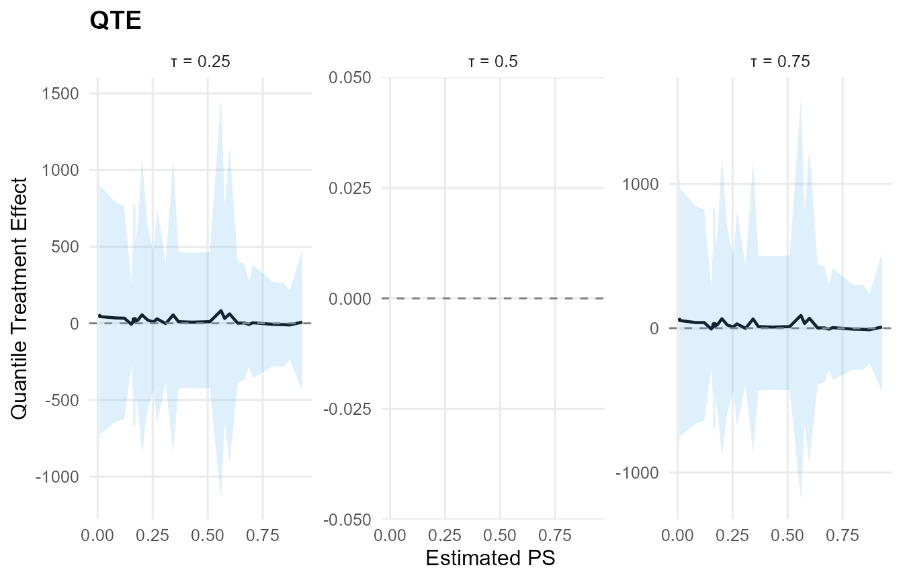

Overview
This vignette collects two end-to-end examples with customized priors and links:
-
Conditional CRP + Amoroso + GPD with covariates,
custom links, and tail settings.
- Causal model (two arms) with SB backends: Normal (treated) and Laplace (control), with covariate-linked locations and custom priors.
Both examples use mtcars and show the main
user-level functions plus S3 methods
(print, summary, plot,
predict, fitted, residuals,
params, ate, qte).
Note on link priors: both SB and CRP backends currently require normal priors for link-mode regression coefficients. The requested lognormal prior for the scale link is therefore shown below as a non-executed spec block.
Data
library(DPmixGPD)
data("mtcars", package = "datasets")
df <- mtcars
y <- df$mpg
X <- df[, c("wt", "hp")]
X <- as.data.frame(X)Model 1: CRP + Amoroso + GPD (Conditional)
Specification
-
Backend: CRP
-
Kernel: Amoroso
-
Covariates:
wt,hp
-
Bulk:
-
loc: identity link, normal prior on coefficients -
scale: identity link, normal prior on coefficients (CRP restriction) -
shape1: fixed at 1 -
shape2: default prior
-
-
Tail:
-
threshold: exp link, normal prior on coefficients -
tail_scale: exp link (default prior)
-
param_specs_amoroso <- list(
bulk = list(
loc = list(
mode = "link",
link = "identity",
beta_prior = list(dist = "normal", args = list(mean = 0, sd = 2))
),
scale = list(
mode = "link",
link = "identity",
beta_prior = list(dist = "normal", args = list(mean = 0, sd = 2))
),
shape1 = list(mode = "fixed", value = 1)
),
gpd = list(
threshold = list(
mode = "link",
link = "exp",
beta_prior = list(dist = "normal", args = list(mean = 0, sd = 0.2))
),
tail_scale = list(
mode = "link",
link = "exp"
)
)
)
# Requested variant (not runnable): link-mode beta priors must be normal
param_specs_amoroso_requested <- list(
bulk = list(
loc = list(
mode = "link",
link = "identity",
beta_prior = list(dist = "normal", args = list(mean = 0, sd = 2))
),
scale = list(
mode = "link",
link = "identity",
beta_prior = list(dist = "lognormal", args = list(meanlog = 0, sdlog = 1))
),
shape1 = list(mode = "fixed", value = 1)
),
gpd = list(
threshold = list(
mode = "link",
link = "exp",
beta_prior = list(dist = "normal", args = list(mean = 0, sd = 0.2))
),
tail_scale = list(
mode = "link",
link = "exp"
)
)
)Build + Run (CRP note)
NIMBLE’s CRP sampler cannot cluster deterministic nodes created by link-mode parameters. As a result, CRP + covariate links are not runnable with the current backend. We still record the requested CRP specification below (for reference), and then run an SB-equivalent model that supports the same customization and lets this vignette compile end-to-end.
# Requested CRP specification (not runnable due to CRP link-mode restriction)
bundle_amoroso_crp <- build_nimble_bundle(
y = y,
X = X,
backend = "crp",
kernel = "amoroso",
GPD = TRUE,
components = 5,
param_specs = param_specs_amoroso,
mcmc = mcmc
)
# Runnable SB equivalent (supports link-mode parameters)
bundle_amoroso <- build_nimble_bundle(
y = y,
X = X,
backend = "sb",
kernel = "amoroso",
GPD = TRUE,
components = 5,
param_specs = param_specs_amoroso,
mcmc = mcmc
)
fit_amoroso <- run_mcmc_bundle_manual(bundle_amoroso, show_progress = FALSE)User-Level Functions
print(bundle_amoroso)
DPmixGPD bundle
<table class="table" style="width: auto !important; margin-left: auto; margin-right: auto;">
<thead>
<tr>
<th style="text-align:center;"> Field </th>
<th style="text-align:center;"> Value </th>
</tr>
</thead>
<tbody>
<tr>
<td style="text-align:center;"> Backend </td>
<td style="text-align:center;"> Stick-Breaking Process </td>
</tr>
<tr>
<td style="text-align:center;"> Kernel </td>
<td style="text-align:center;"> Amoroso Distribution </td>
</tr>
<tr>
<td style="text-align:center;"> Components </td>
<td style="text-align:center;"> 5 </td>
</tr>
<tr>
<td style="text-align:center;"> N </td>
<td style="text-align:center;"> 32 </td>
</tr>
<tr>
<td style="text-align:center;"> X </td>
<td style="text-align:center;"> YES (P=2) </td>
</tr>
<tr>
<td style="text-align:center;"> GPD </td>
<td style="text-align:center;"> TRUE </td>
</tr>
<tr>
<td style="text-align:center;"> Epsilon </td>
<td style="text-align:center;"> 0.025 </td>
</tr>
</tbody>
</table>
contains : code, constants, data, dimensions, inits, monitors
summary(bundle_amoroso)
DPmixGPD bundle summary
<table class="table" style="width: auto !important; margin-left: auto; margin-right: auto;">
<thead>
<tr>
<th style="text-align:center;"> Field </th>
<th style="text-align:center;"> Value </th>
</tr>
</thead>
<tbody>
<tr>
<td style="text-align:center;"> Backend </td>
<td style="text-align:center;"> Stick-Breaking Process </td>
</tr>
<tr>
<td style="text-align:center;"> Kernel </td>
<td style="text-align:center;"> Amoroso Distribution </td>
</tr>
<tr>
<td style="text-align:center;"> Components </td>
<td style="text-align:center;"> 5 </td>
</tr>
<tr>
<td style="text-align:center;"> N </td>
<td style="text-align:center;"> 32 </td>
</tr>
<tr>
<td style="text-align:center;"> X </td>
<td style="text-align:center;"> YES (P=2) </td>
</tr>
<tr>
<td style="text-align:center;"> GPD </td>
<td style="text-align:center;"> TRUE </td>
</tr>
<tr>
<td style="text-align:center;"> Epsilon </td>
<td style="text-align:center;"> 0.025 </td>
</tr>
</tbody>
</table>
Parameter specification
<table class="table" style="width: auto !important; margin-left: auto; margin-right: auto;">
<thead>
<tr>
<th style="text-align:center;"> block </th>
<th style="text-align:center;"> parameter </th>
<th style="text-align:center;"> mode </th>
<th style="text-align:center;"> level </th>
<th style="text-align:center;"> prior </th>
<th style="text-align:center;"> link </th>
<th style="text-align:center;"> notes </th>
</tr>
</thead>
<tbody>
<tr>
<td style="text-align:center;"> meta </td>
<td style="text-align:center;"> backend </td>
<td style="text-align:center;"> info </td>
<td style="text-align:center;"> model </td>
<td style="text-align:center;"> sb </td>
<td style="text-align:center;"> </td>
<td style="text-align:center;"> </td>
</tr>
<tr>
<td style="text-align:center;"> meta </td>
<td style="text-align:center;"> kernel </td>
<td style="text-align:center;"> info </td>
<td style="text-align:center;"> model </td>
<td style="text-align:center;"> amoroso </td>
<td style="text-align:center;"> </td>
<td style="text-align:center;"> </td>
</tr>
<tr>
<td style="text-align:center;"> meta </td>
<td style="text-align:center;"> components </td>
<td style="text-align:center;"> info </td>
<td style="text-align:center;"> model </td>
<td style="text-align:center;"> 5 </td>
<td style="text-align:center;"> </td>
<td style="text-align:center;"> </td>
</tr>
<tr>
<td style="text-align:center;"> meta </td>
<td style="text-align:center;"> N </td>
<td style="text-align:center;"> info </td>
<td style="text-align:center;"> model </td>
<td style="text-align:center;"> 32 </td>
<td style="text-align:center;"> </td>
<td style="text-align:center;"> </td>
</tr>
<tr>
<td style="text-align:center;"> meta </td>
<td style="text-align:center;"> P </td>
<td style="text-align:center;"> info </td>
<td style="text-align:center;"> model </td>
<td style="text-align:center;"> 2 </td>
<td style="text-align:center;"> </td>
<td style="text-align:center;"> </td>
</tr>
<tr>
<td style="text-align:center;"> concentration </td>
<td style="text-align:center;"> alpha </td>
<td style="text-align:center;"> dist </td>
<td style="text-align:center;"> scalar </td>
<td style="text-align:center;"> gamma(shape=1, rate=1) </td>
<td style="text-align:center;"> </td>
<td style="text-align:center;"> stochastic concentration </td>
</tr>
<tr>
<td style="text-align:center;"> bulk </td>
<td style="text-align:center;"> loc </td>
<td style="text-align:center;"> link </td>
<td style="text-align:center;"> regression </td>
<td style="text-align:center;"> beta_loc ~ normal(mean=0, sd=2) </td>
<td style="text-align:center;"> identity </td>
<td style="text-align:center;"> beta_loc is 5 x 2 (components x P) </td>
</tr>
<tr>
<td style="text-align:center;"> bulk </td>
<td style="text-align:center;"> scale </td>
<td style="text-align:center;"> link </td>
<td style="text-align:center;"> regression </td>
<td style="text-align:center;"> beta_scale ~ normal(mean=0, sd=2) </td>
<td style="text-align:center;"> identity </td>
<td style="text-align:center;"> beta_scale is 5 x 2 (components x P) </td>
</tr>
<tr>
<td style="text-align:center;"> bulk </td>
<td style="text-align:center;"> shape1 </td>
<td style="text-align:center;"> fixed </td>
<td style="text-align:center;"> component (1:5) </td>
<td style="text-align:center;"> 1 </td>
<td style="text-align:center;"> </td>
<td style="text-align:center;"> </td>
</tr>
<tr>
<td style="text-align:center;"> bulk </td>
<td style="text-align:center;"> shape2 </td>
<td style="text-align:center;"> dist </td>
<td style="text-align:center;"> component (1:5) </td>
<td style="text-align:center;"> gamma(shape=2, rate=1) </td>
<td style="text-align:center;"> </td>
<td style="text-align:center;"> iid across components </td>
</tr>
<tr>
<td style="text-align:center;"> gpd </td>
<td style="text-align:center;"> threshold </td>
<td style="text-align:center;"> link </td>
<td style="text-align:center;"> observation (1:N) </td>
<td style="text-align:center;"> beta_threshold ~ normal(mean=0, sd=0.2) </td>
<td style="text-align:center;"> exp </td>
<td style="text-align:center;"> beta_threshold is length P=2 </td>
</tr>
<tr>
<td style="text-align:center;"> gpd </td>
<td style="text-align:center;"> tail_scale </td>
<td style="text-align:center;"> link </td>
<td style="text-align:center;"> observation (1:N) </td>
<td style="text-align:center;"> beta_tail_scale ~ normal(mean=0, sd=0.5) </td>
<td style="text-align:center;"> exp </td>
<td style="text-align:center;"> beta_tail_scale is length P=2; tail_scale[i] deterministic </td>
</tr>
<tr>
<td style="text-align:center;"> gpd </td>
<td style="text-align:center;"> tail_shape </td>
<td style="text-align:center;"> dist </td>
<td style="text-align:center;"> scalar </td>
<td style="text-align:center;"> normal(mean=0, sd=0.2) </td>
<td style="text-align:center;"> </td>
<td style="text-align:center;"> </td>
</tr>
</tbody>
</table>
Monitors
n = 11
alpha, w[1:5], z[1:32], beta_loc[1:5,1:2], beta_scale[1:5,1:2], shape1[1:5], shape2[1:5], threshold[1:32], beta_threshold[1:2], beta_tail_scale[1:2], tail_shapeprint(fit_amoroso)
MixGPD fit | backend: Stick-Breaking Process | kernel: Amoroso Distribution | GPD tail: TRUE
n = 32 | components = 5 | epsilon = 0.025
MCMC: niter=600, nburnin=150, thin=2, nchains=1
Fit
Use summary() for posterior summaries; plot() for diagnostics; predict() for predictions.
summary(fit_amoroso)
MixGPD summary | backend: Stick-Breaking Process | kernel: Amoroso Distribution | GPD tail: TRUE | epsilon: 0.025
n = 32 | components = 5
Summary
Initial components: 5 | Components after truncation: 1
WAIC: 289.883
lppd: -143.126 | pWAIC: 1.816
Summary table
<table class="table" style="width: auto !important; margin-left: auto; margin-right: auto;">
<thead>
<tr>
<th style="text-align:center;"> parameter </th>
<th style="text-align:center;"> mean </th>
<th style="text-align:center;"> sd </th>
<th style="text-align:center;"> q0.025 </th>
<th style="text-align:center;"> q0.500 </th>
<th style="text-align:center;"> q0.975 </th>
<th style="text-align:center;"> ess </th>
</tr>
</thead>
<tbody>
<tr>
<td style="text-align:center;"> weights[1] </td>
<td style="text-align:center;"> 0.887 </td>
<td style="text-align:center;"> 0.162 </td>
<td style="text-align:center;"> 0.5 </td>
<td style="text-align:center;"> 1 </td>
<td style="text-align:center;"> 1 </td>
<td style="text-align:center;"> 8.127 </td>
</tr>
<tr>
<td style="text-align:center;"> alpha </td>
<td style="text-align:center;"> 0.571 </td>
<td style="text-align:center;"> 0.398 </td>
<td style="text-align:center;"> 0.083 </td>
<td style="text-align:center;"> 0.479 </td>
<td style="text-align:center;"> 1.405 </td>
<td style="text-align:center;"> 5.822 </td>
</tr>
<tr>
<td style="text-align:center;"> beta_loc[1, 1] </td>
<td style="text-align:center;"> 0.233 </td>
<td style="text-align:center;"> 2.174 </td>
<td style="text-align:center;"> -3.944 </td>
<td style="text-align:center;"> 0.256 </td>
<td style="text-align:center;"> 4.638 </td>
<td style="text-align:center;"> 93.618 </td>
</tr>
<tr>
<td style="text-align:center;"> beta_loc[2, 1] </td>
<td style="text-align:center;"> -0.014 </td>
<td style="text-align:center;"> 1.928 </td>
<td style="text-align:center;"> -3.591 </td>
<td style="text-align:center;"> -0.05 </td>
<td style="text-align:center;"> 3.526 </td>
<td style="text-align:center;"> 87.763 </td>
</tr>
<tr>
<td style="text-align:center;"> beta_loc[3, 1] </td>
<td style="text-align:center;"> -0.348 </td>
<td style="text-align:center;"> 2.164 </td>
<td style="text-align:center;"> -4.435 </td>
<td style="text-align:center;"> -0.446 </td>
<td style="text-align:center;"> 3.641 </td>
<td style="text-align:center;"> 80.98 </td>
</tr>
<tr>
<td style="text-align:center;"> beta_loc[4, 1] </td>
<td style="text-align:center;"> 0.405 </td>
<td style="text-align:center;"> 2.072 </td>
<td style="text-align:center;"> -3.342 </td>
<td style="text-align:center;"> 0.292 </td>
<td style="text-align:center;"> 3.974 </td>
<td style="text-align:center;"> 111.196 </td>
</tr>
<tr>
<td style="text-align:center;"> beta_loc[5, 1] </td>
<td style="text-align:center;"> -0.134 </td>
<td style="text-align:center;"> 1.923 </td>
<td style="text-align:center;"> -3.755 </td>
<td style="text-align:center;"> -0.215 </td>
<td style="text-align:center;"> 3.335 </td>
<td style="text-align:center;"> 185.091 </td>
</tr>
<tr>
<td style="text-align:center;"> beta_loc[1, 2] </td>
<td style="text-align:center;"> 1.05 </td>
<td style="text-align:center;"> 1.191 </td>
<td style="text-align:center;"> -1.062 </td>
<td style="text-align:center;"> 0.903 </td>
<td style="text-align:center;"> 3.649 </td>
<td style="text-align:center;"> 34.465 </td>
</tr>
<tr>
<td style="text-align:center;"> beta_loc[2, 2] </td>
<td style="text-align:center;"> 0.622 </td>
<td style="text-align:center;"> 1.659 </td>
<td style="text-align:center;"> -2.142 </td>
<td style="text-align:center;"> 0.507 </td>
<td style="text-align:center;"> 4.138 </td>
<td style="text-align:center;"> 76.334 </td>
</tr>
<tr>
<td style="text-align:center;"> beta_loc[3, 2] </td>
<td style="text-align:center;"> 0.451 </td>
<td style="text-align:center;"> 1.844 </td>
<td style="text-align:center;"> -3.082 </td>
<td style="text-align:center;"> 0.677 </td>
<td style="text-align:center;"> 3.426 </td>
<td style="text-align:center;"> 63.533 </td>
</tr>
<tr>
<td style="text-align:center;"> beta_loc[4, 2] </td>
<td style="text-align:center;"> -0.063 </td>
<td style="text-align:center;"> 1.904 </td>
<td style="text-align:center;"> -3.762 </td>
<td style="text-align:center;"> 0.133 </td>
<td style="text-align:center;"> 3.416 </td>
<td style="text-align:center;"> 93.672 </td>
</tr>
<tr>
<td style="text-align:center;"> beta_loc[5, 2] </td>
<td style="text-align:center;"> 0.601 </td>
<td style="text-align:center;"> 1.904 </td>
<td style="text-align:center;"> -3.487 </td>
<td style="text-align:center;"> 0.612 </td>
<td style="text-align:center;"> 4.384 </td>
<td style="text-align:center;"> 136.447 </td>
</tr>
<tr>
<td style="text-align:center;"> beta_scale[1, 1] </td>
<td style="text-align:center;"> 0.216 </td>
<td style="text-align:center;"> 1.842 </td>
<td style="text-align:center;"> -3.195 </td>
<td style="text-align:center;"> -0.029 </td>
<td style="text-align:center;"> 4.315 </td>
<td style="text-align:center;"> 118.789 </td>
</tr>
<tr>
<td style="text-align:center;"> beta_scale[2, 1] </td>
<td style="text-align:center;"> -0.236 </td>
<td style="text-align:center;"> 2.016 </td>
<td style="text-align:center;"> -4.741 </td>
<td style="text-align:center;"> -0.147 </td>
<td style="text-align:center;"> 3.515 </td>
<td style="text-align:center;"> 99.498 </td>
</tr>
<tr>
<td style="text-align:center;"> beta_scale[3, 1] </td>
<td style="text-align:center;"> -0.263 </td>
<td style="text-align:center;"> 2.004 </td>
<td style="text-align:center;"> -4.147 </td>
<td style="text-align:center;"> -0.399 </td>
<td style="text-align:center;"> 4.233 </td>
<td style="text-align:center;"> 72.565 </td>
</tr>
<tr>
<td style="text-align:center;"> beta_scale[4, 1] </td>
<td style="text-align:center;"> -0.384 </td>
<td style="text-align:center;"> 2.089 </td>
<td style="text-align:center;"> -4.604 </td>
<td style="text-align:center;"> -0.269 </td>
<td style="text-align:center;"> 3.131 </td>
<td style="text-align:center;"> 90.501 </td>
</tr>
<tr>
<td style="text-align:center;"> beta_scale[5, 1] </td>
<td style="text-align:center;"> 0.137 </td>
<td style="text-align:center;"> 1.913 </td>
<td style="text-align:center;"> -3.345 </td>
<td style="text-align:center;"> 0.196 </td>
<td style="text-align:center;"> 4.024 </td>
<td style="text-align:center;"> 71.448 </td>
</tr>
<tr>
<td style="text-align:center;"> beta_scale[1, 2] </td>
<td style="text-align:center;"> 1.287 </td>
<td style="text-align:center;"> 1.703 </td>
<td style="text-align:center;"> -2.587 </td>
<td style="text-align:center;"> 1.228 </td>
<td style="text-align:center;"> 5.205 </td>
<td style="text-align:center;"> 62.151 </td>
</tr>
<tr>
<td style="text-align:center;"> beta_scale[2, 2] </td>
<td style="text-align:center;"> 0.766 </td>
<td style="text-align:center;"> 1.756 </td>
<td style="text-align:center;"> -2.976 </td>
<td style="text-align:center;"> 0.833 </td>
<td style="text-align:center;"> 3.866 </td>
<td style="text-align:center;"> 48.742 </td>
</tr>
<tr>
<td style="text-align:center;"> beta_scale[3, 2] </td>
<td style="text-align:center;"> 0.328 </td>
<td style="text-align:center;"> 2.243 </td>
<td style="text-align:center;"> -4.384 </td>
<td style="text-align:center;"> 0.703 </td>
<td style="text-align:center;"> 4.556 </td>
<td style="text-align:center;"> 58.72 </td>
</tr>
<tr>
<td style="text-align:center;"> beta_scale[4, 2] </td>
<td style="text-align:center;"> 0.033 </td>
<td style="text-align:center;"> 1.864 </td>
<td style="text-align:center;"> -3.245 </td>
<td style="text-align:center;"> 0.111 </td>
<td style="text-align:center;"> 3.689 </td>
<td style="text-align:center;"> 98.23 </td>
</tr>
<tr>
<td style="text-align:center;"> beta_scale[5, 2] </td>
<td style="text-align:center;"> -0.185 </td>
<td style="text-align:center;"> 1.938 </td>
<td style="text-align:center;"> -3.569 </td>
<td style="text-align:center;"> -0.354 </td>
<td style="text-align:center;"> 3.827 </td>
<td style="text-align:center;"> 108.64 </td>
</tr>
<tr>
<td style="text-align:center;"> beta_tail_scale[1] </td>
<td style="text-align:center;"> 0.874 </td>
<td style="text-align:center;"> 0.093 </td>
<td style="text-align:center;"> 0.683 </td>
<td style="text-align:center;"> 0.87 </td>
<td style="text-align:center;"> 1.037 </td>
<td style="text-align:center;"> 15.682 </td>
</tr>
<tr>
<td style="text-align:center;"> beta_tail_scale[2] </td>
<td style="text-align:center;"> -0 </td>
<td style="text-align:center;"> 0.001 </td>
<td style="text-align:center;"> -0.002 </td>
<td style="text-align:center;"> 0 </td>
<td style="text-align:center;"> 0.002 </td>
<td style="text-align:center;"> 2.349 </td>
</tr>
<tr>
<td style="text-align:center;"> beta_threshold[1] </td>
<td style="text-align:center;"> 0.098 </td>
<td style="text-align:center;"> 0.222 </td>
<td style="text-align:center;"> -0.269 </td>
<td style="text-align:center;"> 0.068 </td>
<td style="text-align:center;"> 0.431 </td>
<td style="text-align:center;"> 10.477 </td>
</tr>
<tr>
<td style="text-align:center;"> beta_threshold[2] </td>
<td style="text-align:center;"> -0.076 </td>
<td style="text-align:center;"> 0.125 </td>
<td style="text-align:center;"> -0.388 </td>
<td style="text-align:center;"> 0 </td>
<td style="text-align:center;"> 0.008 </td>
<td style="text-align:center;"> 11.704 </td>
</tr>
<tr>
<td style="text-align:center;"> tail_shape </td>
<td style="text-align:center;"> 0.313 </td>
<td style="text-align:center;"> 0.131 </td>
<td style="text-align:center;"> 0.071 </td>
<td style="text-align:center;"> 0.318 </td>
<td style="text-align:center;"> 0.566 </td>
<td style="text-align:center;"> 67.33 </td>
</tr>
<tr>
<td style="text-align:center;"> shape1[1] </td>
<td style="text-align:center;"> 1 </td>
<td style="text-align:center;"> 0 </td>
<td style="text-align:center;"> 1 </td>
<td style="text-align:center;"> 1 </td>
<td style="text-align:center;"> 1 </td>
<td style="text-align:center;"> 0 </td>
</tr>
<tr>
<td style="text-align:center;"> shape2[1] </td>
<td style="text-align:center;"> 2.73 </td>
<td style="text-align:center;"> 1.891 </td>
<td style="text-align:center;"> 0.162 </td>
<td style="text-align:center;"> 2.226 </td>
<td style="text-align:center;"> 7.515 </td>
<td style="text-align:center;"> 24.347 </td>
</tr>
</tbody>
</table>S3 Methods (Fit)
tryCatch(
plot(fit_amoroso, family = "trace"),
error = function(e) {
message("Plotting 'fit_amoroso' with family = 'trace' failed: ", conditionMessage(e))
}
)pred_mean <- predict(fit_amoroso, x = X, type = "mean", cred.level = 0.90, interval = "credible")
pred_q90 <- predict(fit_amoroso, x = X, type = "quantile", index = 0.90, cred.level = 0.90, interval = "credible")
head(pred_mean$fit)
estimate lower upper
1 10.44 2.1136 31.5
2 13.19 4.3880 35.3
3 7.13 0.9482 25.9
4 19.71 9.6634 47.5
5 21.76 -0.0165 57.1
6 25.74 6.8658 52.5
head(pred_q90$fit)
estimate index id lower upper
1 33.6 0.9 1 24.8 48.1
2 42.1 0.9 2 29.5 61.0
3 25.9 0.9 3 19.7 36.8
4 57.0 0.9 4 37.8 83.4
5 68.9 0.9 5 43.9 104.6
6 70.9 0.9 6 44.6 107.0fvals <- fitted(fit_amoroso, type = "mean", level = 0.90)
head(fvals)
fit lower upper residuals
1 9.77 2.624 31.5 11.23
2 13.56 0.917 38.5 7.44
3 7.16 0.364 26.1 15.64
4 19.59 7.485 46.2 1.81
5 21.78 1.763 60.3 -3.08
6 25.20 9.714 57.3 -7.10
summary(fvals$residuals)
Min. 1st Qu. Median Mean 3rd Qu. Max.
-153.006 -10.219 -0.635 -10.438 11.268 29.688 Model 2: Causal (SB Normal vs SB Laplace)
Specification
-
Backend: SB (both arms)
-
Treated arm (T=1): Normal kernel
- Location: identity link, Gaussian prior
- SD: Inverse-Gamma prior
- Location: identity link, Gaussian prior
-
Control arm (T=0): Laplace kernel
- Location: identity link, Gaussian prior
- Scale: Gamma prior
- Location: identity link, Gaussian prior
X_causal <- df[, c("wt", "hp", "qsec", "cyl")]
X_causal <- as.data.frame(X_causal)
T_ind <- df$am
param_specs_causal <- list(
trt = list(
bulk = list(
mean = list(
mode = "link",
link = "identity",
beta_prior = list(dist = "normal", args = list(mean = 0, sd = 2))
),
sd = list(
mode = "dist",
dist = "invgamma",
args = list(shape = 2, scale = 1)
)
)
),
con = list(
bulk = list(
location = list(
mode = "link",
link = "identity",
beta_prior = list(dist = "normal", args = list(mean = 0, sd = 2))
),
scale = list(
mode = "dist",
dist = "gamma",
args = list(shape = 2, rate = 1)
)
)
)
)Build + Run
causal_bundle <- build_causal_bundle(
y = y,
X = X_causal,
T = T_ind,
backend = "sb",
kernel = c("normal", "laplace"),
GPD = FALSE,
components = 5,
param_specs = param_specs_causal,
PS = "logit",
mcmc_outcome = mcmc,
mcmc_ps = mcmc
)
causal_fit <- run_mcmc_causal(causal_bundle, show_progress = FALSE)User-Level Functions
print(causal_bundle)
DPmixGPD causal bundle
PS model: Bayesian logit (T | X)
<table class="table" style="width: auto !important; margin-left: auto; margin-right: auto;">
<thead>
<tr>
<th style="text-align:center;"> Field </th>
<th style="text-align:center;"> Treated </th>
<th style="text-align:center;"> Control </th>
</tr>
</thead>
<tbody>
<tr>
<td style="text-align:center;"> Backend </td>
<td style="text-align:center;"> Stick-Breaking Process </td>
<td style="text-align:center;"> Stick-Breaking Process </td>
</tr>
<tr>
<td style="text-align:center;"> Kernel </td>
<td style="text-align:center;"> normal </td>
<td style="text-align:center;"> laplace </td>
</tr>
<tr>
<td style="text-align:center;"> Components </td>
<td style="text-align:center;"> 5 </td>
<td style="text-align:center;"> 5 </td>
</tr>
<tr>
<td style="text-align:center;"> GPD tail </td>
<td style="text-align:center;"> FALSE </td>
<td style="text-align:center;"> FALSE </td>
</tr>
<tr>
<td style="text-align:center;"> Epsilon </td>
<td style="text-align:center;"> 0.025 </td>
<td style="text-align:center;"> 0.025 </td>
</tr>
</tbody>
</table>
Outcome PS included: TRUE
n (control) = 19 | n (treated) = 13
summary(causal_bundle)
DPmixGPD causal bundle summary
DPmixGPD causal bundle
PS model: Bayesian logit (T | X)
<table class="table" style="width: auto !important; margin-left: auto; margin-right: auto;">
<thead>
<tr>
<th style="text-align:center;"> Field </th>
<th style="text-align:center;"> Treated </th>
<th style="text-align:center;"> Control </th>
</tr>
</thead>
<tbody>
<tr>
<td style="text-align:center;"> Backend </td>
<td style="text-align:center;"> Stick-Breaking Process </td>
<td style="text-align:center;"> Stick-Breaking Process </td>
</tr>
<tr>
<td style="text-align:center;"> Kernel </td>
<td style="text-align:center;"> normal </td>
<td style="text-align:center;"> laplace </td>
</tr>
<tr>
<td style="text-align:center;"> Components </td>
<td style="text-align:center;"> 5 </td>
<td style="text-align:center;"> 5 </td>
</tr>
<tr>
<td style="text-align:center;"> GPD tail </td>
<td style="text-align:center;"> FALSE </td>
<td style="text-align:center;"> FALSE </td>
</tr>
<tr>
<td style="text-align:center;"> Epsilon </td>
<td style="text-align:center;"> 0.025 </td>
<td style="text-align:center;"> 0.025 </td>
</tr>
</tbody>
</table>
Outcome PS included: TRUE
n (control) = 19 | n (treated) = 13 print(causal_fit)
DPmixGPD causal fit
PS model: Bayesian logit (T | X)
Outcome (treated): backend = sb | kernel = normal
Outcome (control): backend = sb | kernel = laplace
GPD tail (treated/control): FALSE / FALSE
summary(causal_fit)
-- PS fit --
DPmixGPD PS fit
model: logit
-- Outcome fits --
[control]
MixGPD fit | backend: Stick-Breaking Process | kernel: Laplace Distribution | GPD tail: FALSE
n = 19 | components = 5 | epsilon = 0.025
MCMC: niter=600, nburnin=150, thin=2, nchains=1
Fit
Use summary() for posterior summaries; plot() for diagnostics; predict() for predictions.
[treated]
MixGPD fit | backend: Stick-Breaking Process | kernel: Normal Distribution | GPD tail: FALSE
n = 13 | components = 5 | epsilon = 0.025
MCMC: niter=600, nburnin=150, thin=2, nchains=1
Fit
Use summary() for posterior summaries; plot() for diagnostics; predict() for predictions.S3 Methods (Causal)
pred_causal_mean <- predict(causal_fit, x = X_causal, type = "mean", interval = "credible")
head(pred_causal_mean)
ps estimate lower upper
Mazda RX4 0.510 10.28 -421 454
Mazda RX4 Wag 0.367 10.10 -422 455
Datsun 710 0.667 1.32 -366 376
Hornet 4 Drive 0.253 7.38 -427 452
Hornet Sportabout 0.270 29.57 -645 736
Valiant 0.162 5.47 -411 430ate_result <- ate(causal_fit, interval = "credible", nsim_mean = 50)
print(ate_result)
ATE (Average Treatment Effect)
Prediction points: 32
Conditional (covariates): YES
Propensity score used: YES
PS scale: logit
Posterior mean draws: 50
Credible interval: credible (95%)
ATE estimates (treated - control):
<table class="table" style="width: auto !important; margin-left: auto; margin-right: auto;">
<thead>
<tr>
<th style="text-align:center;"> id </th>
<th style="text-align:center;"> estimate </th>
<th style="text-align:center;"> lower </th>
<th style="text-align:center;"> upper </th>
</tr>
</thead>
<tbody>
<tr>
<td style="text-align:center;"> 1 </td>
<td style="text-align:center;"> 10.281 </td>
<td style="text-align:center;"> -422.106 </td>
<td style="text-align:center;"> 455.518 </td>
</tr>
<tr>
<td style="text-align:center;"> 2 </td>
<td style="text-align:center;"> 10.103 </td>
<td style="text-align:center;"> -423.415 </td>
<td style="text-align:center;"> 455.855 </td>
</tr>
<tr>
<td style="text-align:center;"> 3 </td>
<td style="text-align:center;"> 1.352 </td>
<td style="text-align:center;"> -368.406 </td>
<td style="text-align:center;"> 378.089 </td>
</tr>
<tr>
<td style="text-align:center;"> 4 </td>
<td style="text-align:center;"> 7.376 </td>
<td style="text-align:center;"> -429.805 </td>
<td style="text-align:center;"> 453.906 </td>
</tr>
<tr>
<td style="text-align:center;"> 5 </td>
<td style="text-align:center;"> 29.573 </td>
<td style="text-align:center;"> -645.528 </td>
<td style="text-align:center;"> 737.107 </td>
</tr>
<tr>
<td style="text-align:center;"> 6 </td>
<td style="text-align:center;"> 5.461 </td>
<td style="text-align:center;"> -414.346 </td>
<td style="text-align:center;"> 432.494 </td>
</tr>
</tbody>
</table>... (26 more rows)
summary(ate_result)
ATE Summary
==================================================
Prediction points: 32
Conditional: YES | PS used: YES
Posterior mean draws: 50
Interval: credible (95%)
Model specification:
Backend (trt/con): sb / sb
Kernel (trt/con): normal / laplace
GPD tail (trt/con): NO / NO
ATE statistics:
Mean: 19.688 | Median: 12.723
Range: [-11.387, 77.007]
SD: 22.425
Credible interval width:
Mean: 1164.747 | Median: 983.302
Range: [441.91, 2619.232]
qte_result <- qte(causal_fit, probs = c(0.25, 0.5, 0.75), interval = "credible")
# Plotting may fail on some graphics devices (e.g., non-interactive or CI environments),
# so errors are intentionally suppressed to ensure the vignette renders successfully.
try({
plot(ate_result, type = "effect")
plot(qte_result, type = "effect")
}, silent = TRUE)